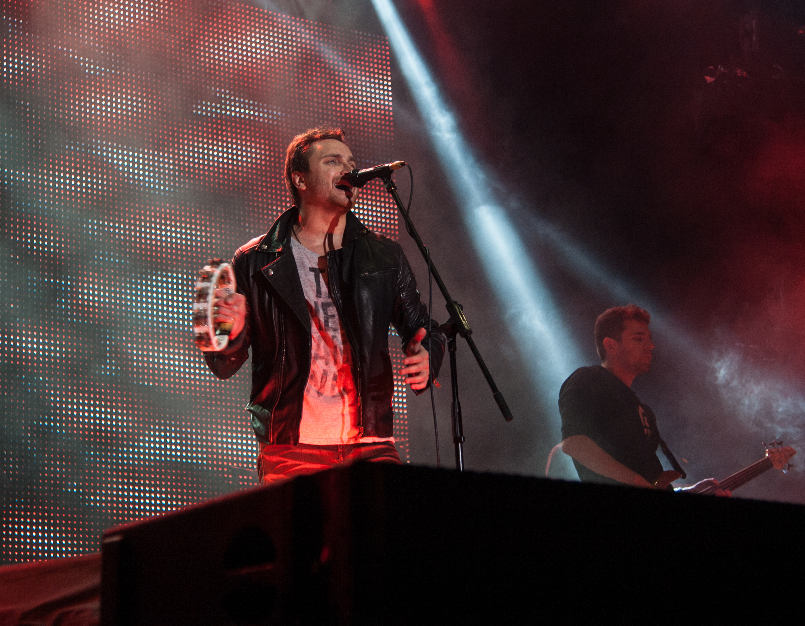

Мы посвящаем наш тур всем тем, кто тогда, 70 лет назад,
боролся и верил. Мы посвящаем наш тур, всем тем, кто, не
взирая на национальность, веру, возраст готов был отдать свою
жизнь за освобождение нашей столицы - города Киева, за
освобождение нашей с вами Украины.
Мы хотим, чтобы живущие сейчас услышали друг друга,
услышали тех, кто выступает за единство и объединение. Мы
не политики, но мы не хотим быть в стороне, нам не нужны
голоса на выборах, но нам нужна уверенность в собственных
силах, уверенность в том, что решения, которые принимаются
наверху, не подведут наш народ к пропасти и конфронтации.